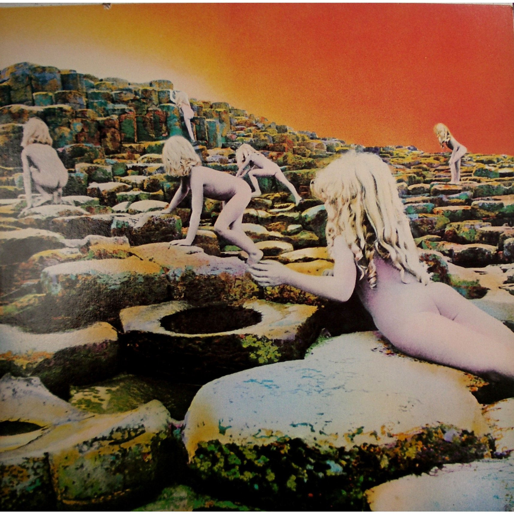
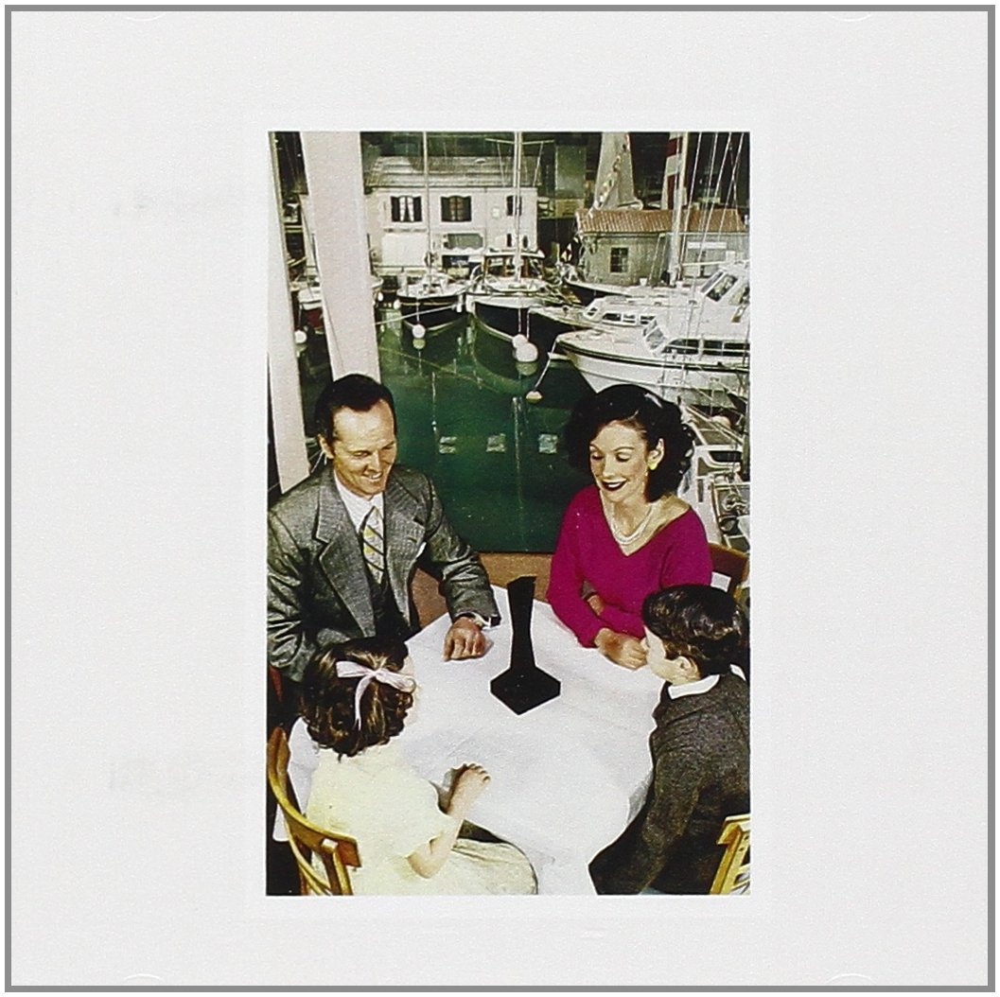
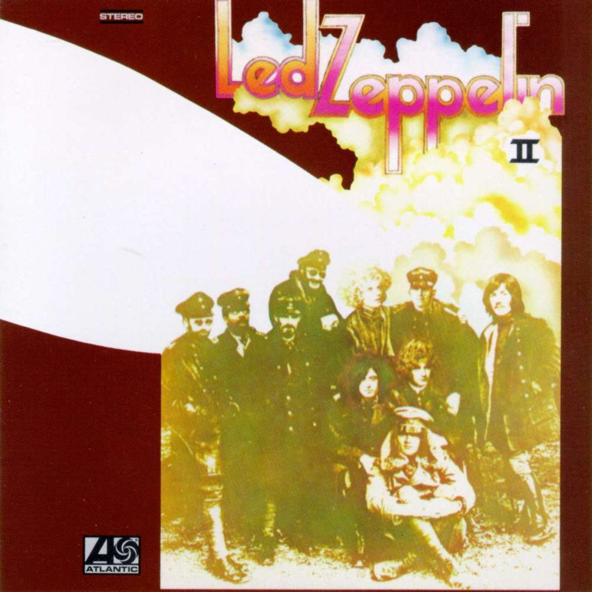
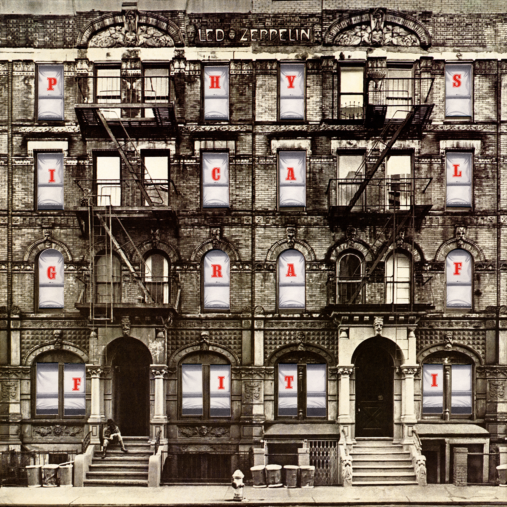
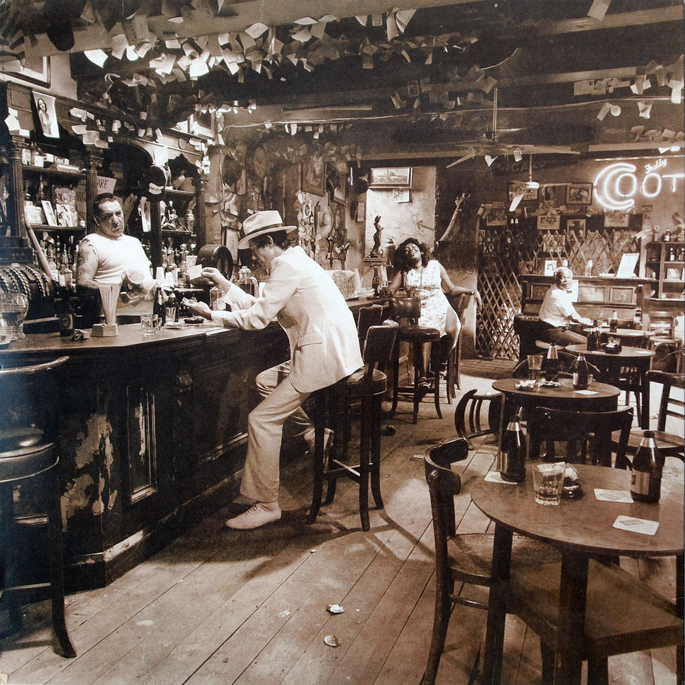

Led Zeppelin I

Led Zeppelin I was release 12 January 1969. It was recorded September/October 1968 in olympic studio London and was produced by Jimmy Page. It contains 9 tracks and has a length of 44.52minutes. The album is ranked at 29 on the Rolling Stones greatest albums of all time and in 2004 it was inducted into the grammy hall of fame. The controversial Artwork, chosen by Jimmy Page, shows the burning hindenburg airship and is a refrence to the origin of the bands name. Although it was initially not critically well received on first release it became a commerical success.
Led Zeppelin III

Seen as a turning point in the groups music the third album released 5 October 1970 in the US and 23 October in the UK. It contains 10 tracks and is 43:04 minutes long, and contains more acoustic folk and blues style of music. After a heavy tour with their second album they retreated to an 18th century cottage in gwynedd wales named 'bron-yr-aur' a named track on the album. Band members say the peaceful setting with no electricity or running water led to the switch from heavy rock to more acoustic and blues style of play reflected by the tracks.
Houses of The Holy
Houses of the holy was released 28 march 1973 and is the fifth album to be released by the band. It has a length of 40:57 minutes and contains 8 tracks. The album contains some of the most famous songs including: 'No Quarter', The Song Remains The Same' and 'The Rain Song'. Some of the songs were produced as demo's at the personal studios of John Paul Jones and Jimmy Page. Produced by Jimmy Page most of the album was recorded in the spring of 1972. The Artwork is a collage of several Photos taken at 'Giants Causeway' in Northern Ireland, and took a gruelling 10 days.
Prescence
Achieving triple-platinum certification in the US and commercial success reaching the top of both the British and American album charts, Presence was released march 31 1976. The album has a length of 44:25minutes and contains 7 tracks. It was created during a time when Robert Plant was recovering from a serious car accident. Jimmy Page describes this album as the band's 'most important' album, showing there ability to continue and still succeed despite Robert's inability.
Led Zeppelin II
Led Zeppelin II was the first of their albums to reached number one in both the UK and US album charts making it a hugely significant album to their success. It was released 22 October 1969 in the US and 31 October 1969 in the UK. The album production is credited again to Jimmy Page, showing his uncomparable ability as a muscian and producer. The designer of the album cover for this album was 'David Juniper' and he was later nominated for a grammy award for best recording package. The album was later certified 12x platinum on 15 November 1999.
Led Zeppelin IV

The fourth album released 8 November 1971 with a length of 43:24 minutes and containing 8 tracks. It was produced by Jimmy Page and contains one of the most well known singles 'Stairway to Heaven'. The album is one of the best selling albums of all time, selling more than 37million copies. It was released without an official title which made it difficult to identify however widely became known as 'Led Zeppelin IV' due to being the fourth album released. The 19th century artwork was bought by Plant from an Antique shop in Reading, Berkeshire.
Physical Graffiti
The sixth album to be released 24th February 1975 and was released as a double album. It contains 15 tracks and has a length of 82:45minutes. On its release it was a huge success ranking at number one in the album charts in both the UK and the US. Several years of recording went into this album and it contains a range of musical styles from: Progressive Rock, Acoustic Rock and Roll, Driving Funk, Eastern Orchestral Rock and many more...Once again produced by Jimmy Page. The album cover is a photograph of two five-storey buildings located at 96 and 94 St.Marks Place in New York.
In Through the Out Door
This is the eighth and final studio album released by the band. Released 15 August 1979 with a length of 42:25 and containing 7 tracks. It was released a year before the death of drummer john Bonham in 1980. The album went to No.1 on billboard's chart in its second week, reportedly selling 1.7million copies within days of its release. It was produced by Jimmy Page in Stockholm Sweden.